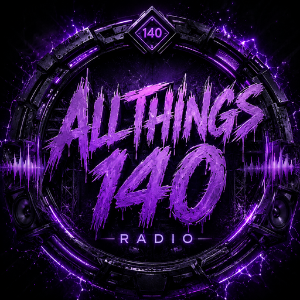

JOIN THE TRANSMISSION.
The public AllThings140 Radio Discord is where listeners, DJs, and bass heads connect between broadcasts.
The invite is live — join the community and stay connected between broadcasts.

The public AllThings140 Radio Discord is where listeners, DJs, and bass heads connect between broadcasts.
The invite is live — join the community and stay connected between broadcasts.